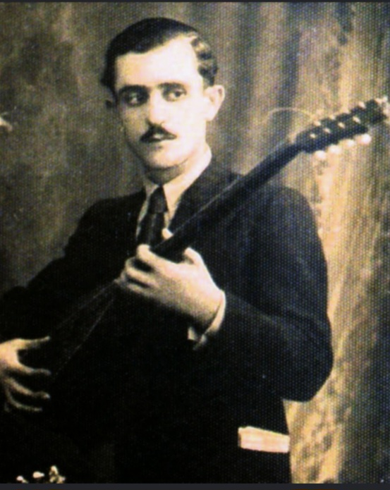

Η Τραγική Μορφή και ο ασύγκριτος δεξιοτέχνης του μπαγλαμά (1912 – 1944)

Ο Ανέστης Δελιάς γεννήθηκε στη Σμύρνη το 1912 και ήρθε στην Ελλάδα προσφυγόπουλο. Υπήρξε ιδρυτικό μέλος της θρυλικής «Τετράδος του Πειραιώς» μαζί με τον Μάρκο Βαμβακάρη, τον Γιώργο Μπάτη και τον Στράτο Παγιουμτζή. Ξεχώριζε για την αριστοκρατική του εμφάνιση, τα ραμμένα στα μέτρα του κοστούμια και το ασύγκριτα καθαρό, «κεντητό» παίξιμό του. Ο τρόπος που χειριζόταν τον μπαγλαμά θεωρείται μέχρι σήμερα σχολή από μόνος του, καθώς έδινε μια μοναδική «γλύκα» και ρυθμική ακρίβεια στις εκτελέσεις.
Παρά το τεράστιο ταλέντο του, η ζωή του σημαδεύτηκε από τον εθισμό του στα ναρκωτικά. Στις αρχές της δεκαετίας του '40, η εξάρτηση από την ηρωίδα τον απομάκρυνε από τη μουσική σκηνή και τις ηχογραφήσεις, βυθίζοντάς τον στην εξαθλίωση. Κατά τη διάρκεια της Γερμανικής Κατοχής, περιπλανιόταν στους δρόμους της Αθήνας σωματικά και ψυχικά κατεστραμμένος. Έφυγε από τη ζωή το καλοκαίρι του 1944 από πείνα και αρρώστια, σε ηλικία μόλις 32 ετών, αφήνοντας πίσω του έναν θρύλο που ενέπνευσε γενιές και γενιές.
«Ο Ανέστης δεν έπαιζε απλά μπαγλαμά· τον έκανε να μιλάει. Ήταν τόσο μπροστά από την εποχή του, που ακόμα και οι παλιοί τον κοιτούσαν με δέος.»